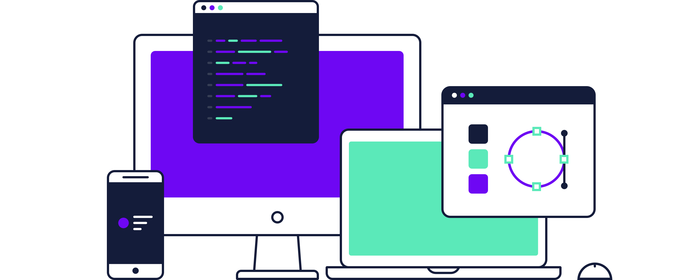
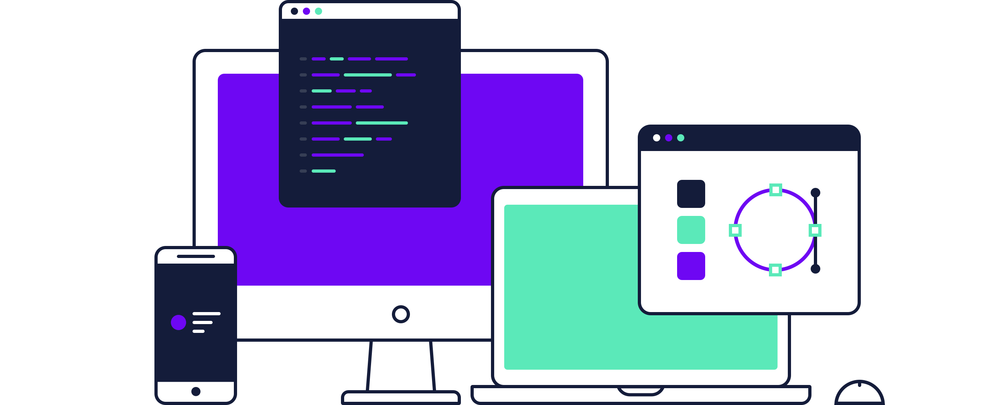

Twórca Rozwiązań Webowych & Java Developer
Projektuję intuicyjne i eleganckie strony internetowe oraz aplikacje, które przyciągają uwagę i angażują użytkowników, łącząc najnowsze technologie z kreatywnością.
Projektuję intuicyjne i eleganckie strony internetowe oraz aplikacje, które przyciągają uwagę i angażują użytkowników, łącząc najnowsze technologie z kreatywnością.
Cześć, jestem Kacper. Miło mi Cię poznać.
Jako student informatyki, od kilku lat z zapałem zgłębiam technologie i programowanie. W tym czasie zdobyłem cenne doświadczenie, pracując nad różnorodnymi projektami - od aplikacji webowych po mobilne, korzystając z technologii takich jak React, Node.js i Java, co pozwoliło mi na rozwój kompleksowego podejścia do tworzenia oprogramowania. Moje doświadczenie z Javą, od solidnych podstaw w tworzeniu backendu za pomocą Spring Boot po rozwijanie aplikacji mobilnych na Androida, umożliwiło mi nie tylko głębokie zrozumienie programowania obiektowego, ale także zdobycie umiejętności rozwiązywania złożonych problemów i tworzenia wydajnego, skalowalnego oprogramowania.
Cenię sobie prostą strukturę treści, czyste wzorce projektowe i przemyślane interakcje.
Zainteresowania projektowe:
UX, UI, Strony internetowe, Aplikacje, Logotypy
Narzędzia projektowe:
Lubię tworzyć rzeczy od podstaw i cieszę się, mogąc ożywiać pomysły w przeglądarce.
Języki, którymi się posługuję:
HTML, JavaScript, CSS, Sass, Git
Narzędzia deweloperskie:
Pasjonuję się tworzeniem skalowalnych, wydajnych rozwiązań backendowych oraz aplikacji mobilnych.
Specjalizacje:
Aplikacje Backendowe, Mikrousługi, Aplikacje Android, Integracje Systemów
Technologie i narzędzia:
Mój ostatni projekt
Cel: Wizytówka firmy
Technologie: PHP, HTML, CSS z globalną deklaracją Root
Chcesz wspólnie tworzyć coś wyjątkowego? Umówmy się na kawę i rozmowę o Twoim projekcie!